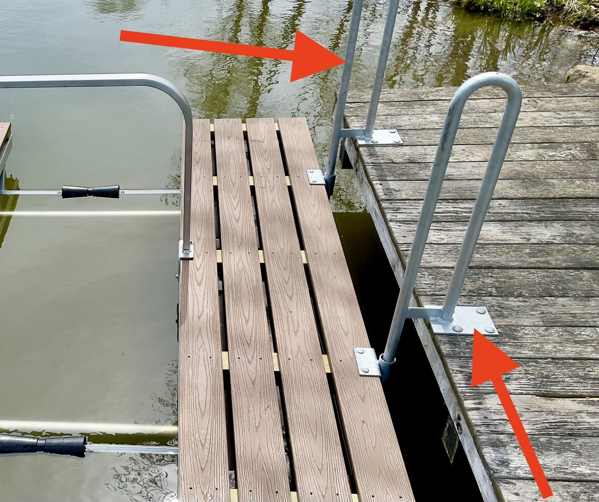
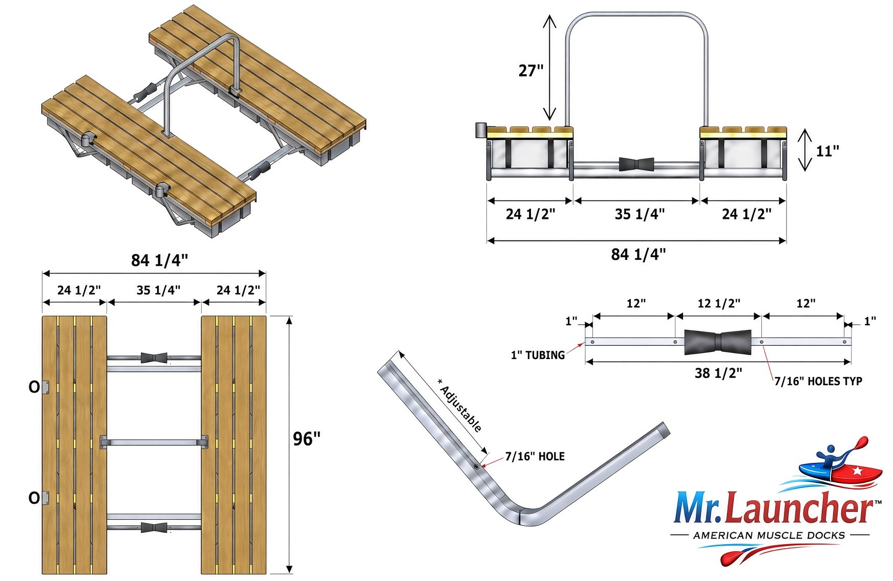

MR. LAUNCHER 2.0
PLATAPORMA PARA SA KAYAK
MANWAL SA PAG-INSTALL


Mr. Launcher 2.0 Manwal sa Pag-installMANWAL SA PAG-INSTALL
MARAMING SALAMAT sa pagbili ng Mr. Launcher 2.0 na kayak launch!
Pakibasa ang lahat ng direksyon at panoorin ang mga help video bago magsimula.
Mga help video: youtube.com/@amdocks
Higit pang mga larawan at impormasyon: www.AmericanMuscleDocks.com
Ang residential na launch na ito ay nilalayong magbigay ng mas madaling paraan para sumakay at lumabas ng inyong kayak.
Ang residential na kayak launch na ito ay hindi nilalayong gamitin bilang floating dock at dapat gamitin ng isang tao lamang sa isang pagkakataon. Sundin ang mga direksyon para sa tama at ligtas na pag-install.


Grasahan ang mga thread ng 3/8 x 4” na stainless bolt habang ikinakabit ang mga pipe support.
Ikabit ang mga Aluminum na Pipe Support
PAHINA 5 2Ikabit ang mga Sq. Tube Stabilizer
PAHINA 6 3I-install ang Aluminum na Grab-Bar
PAHINA 7 4Ikabit ang mga Kandy Kane Receiver
PAHINA 8
** May mga pre-drilled na butas na sa aluminum na V kung saan pinakamainam na nakadantay ang karamihan ng kayak sa mga rubber roller. Iba-iba ang hugis ng ilalim ng ilang kayak at maaaring kailanganin ang bagong butas para itaas o ibaba ang bracket na ito. Ang tamang resistance ay sapat lamang para makasakay at makalabas kayo sa kayak nang hindi masyadong gumagalaw ang kayak. Itinakda namin ang mga butas sa pinakakaraniwang taas na bagay sa halos lahat ng ilalim ng kayak, kaya hinahawakan ng mga roller ang kayak at hindi ito naaanod kapag nakadaong.

Ilagay ang aluminum na grab-bar sa pinakagitna ng loob ng dalawang floating platform. May mga pre-drilled na butas sa itaas at ibaba ng grab-bar (itugma ang mga ito sa mga pre-drilled na butas ng mga plataporma). Kung hindi eksaktong magkatapat ang mga butas, maaaring kailangan mong luwagan ang ilang bolt ng mga aluminum na pipe support o square tube stabilizer na inikabit mo.

Ikabit ang mga pipe receiver sa inyong floating dock section - Ipaibabaw ito sa panlabas na 2x4” na sleeper board para mapunan ng board na iyon ang espasyo sa pagitan ng decking at ng aluminum na frame, o gumamit ng 2x4” na bloke para punan ang espasyo sa ilalim ng bracket.
MGA PIPE RECEIVER - Gumamit ng (2) 3/8 x 4” na carriage bolt sa bawat kabitan, mula sa itaas pababa. * Ibutas ang mga ito na may bahagyang anggulo palabas ng dock (Huwag mag-alala kung tamaan ang mounting flange ng float). Gumamit ng (1) 3/8 x 1 ¼” na carriage bolt sa gilid na bahagi ng bawat kabitan.
MGA DECK BRACKET - Planuhin kung saan gustong magbutas at ikabit ang mga Kandy Kane deck bracket sa inyong permanenteng istruktura, bawat isa gamit ang (4) 1/2 x 3” na carriage bolt. Ikabit ang plate nang pinakamalapit sa gilid ng decking hangga't maaari para may espasyo sa pagitan ng tubo at ng inyong decking (tinitiyak ng espasyong ito na makakausad pataas sa tubo ang mga pipe holder ng kayak launch nang hindi naiipit sa inyong dock).





I-tap o i-click ang anumang larawan para buksan ito nang full screen. Mas madaling mabasa ang drawing ng sukat kapag pinalaki.